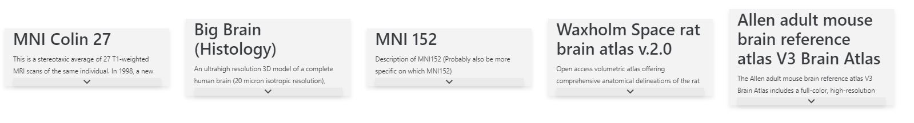
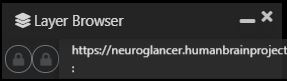
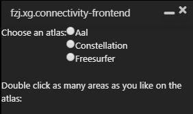
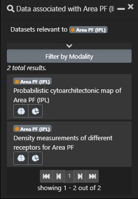
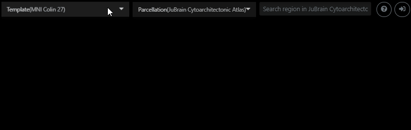

At the first page of an application, you see the list of templates. Each item of the list contains name and description
As you can see, below the description text is the arrow button. Usually, description text is collapsed into the main screen and if you want to open full Description, open it using the arrow button. To choose one of the templates, just click the relevant one from the list.
After you choose the template, brain images will appear on the screen
As you can see, the simple page of the brain atlas viewer consists of 9 basic parts. The parts are marked with white squares. Also, some of the parts can be divided too. We will talk about them. Now let's describe the parts
1,2,3 - 2D images of the brain.
4 - The 3D image of the brain.
5 - This part consists with logo and icons for open floating widgets as searches, layers and plugins. (click for details)
6 - The part contains information about the position of cursor and camera. From camera, it is available to reset position, rotation, and zoom for both 2D and 3D images. (click for details)
7 - This part contains information about zoom in 2D images.
8 - From the part it is available to select template and parcellations. Also, it's available to search and select or deselect regions of parcellation. With what panel contains help and login buttons. (click for details)
9 - With the clicking of the button, in the 3D image user can hide and show frontal octant of the brain.
Let's deep dive into the regions 5, 6 and 8. These parts are complex. The items of each part could perform the different functions, but mostly they are united in one category.
5
As we mentioned, the part consists of a logo and icons Located under it. Icons are for opened or collapsed floating widgets as layer browser, plugins, and searches. Let's see the image of these icons
As you can see, there is 3 type of icons. 1. The icon for layer browser. 2. Icons for plugins. 3. Icons for searches. Let's pretend the floating widgets itself
| Layer Browser | Plugin | Search |
|  |  |  |
6
In the first example, the part under the number 6 is not visible well. So Let's look at it better.
As you can see, we have 4 constant and 1 temporary line
1 - reset: from the line you can reset position rotation and zoom of coordinates.
2 - space: from line, you can change the measure from physical to voxel.
3 - navigation: from here as you can see the coordinates of the image, you can change them.
4 - navigation: you can see the coordinates of the mouse.
5 - this temporary line is shown when the cursor is hovering some region of parcellation. Accordingly, the line content is the name of the region.
8
Let's look at part 8 better
As you can see you can select templates and parcellation with drop-down lists. Also, you can search and select the specific regions of parcellation.